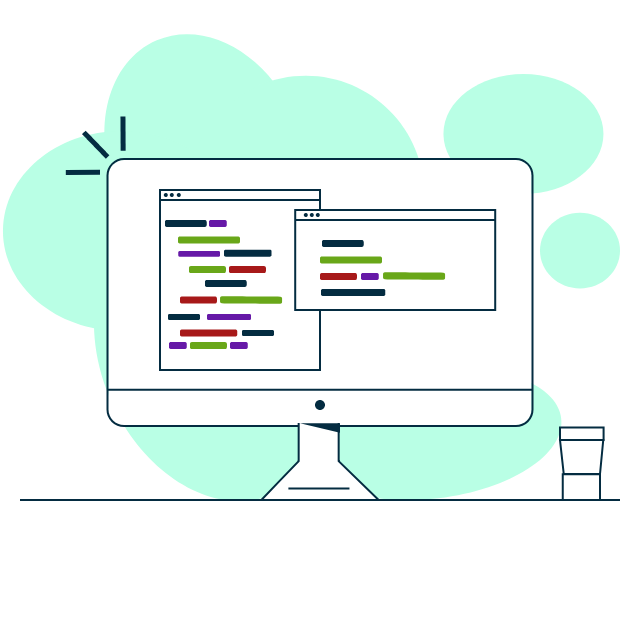

Sleek. User-Driven. Responsive. Design.
Front End Web Developer based in the San Francisco Bay Area with a passion to build user driven web applications to tell your story.


I have always sought out opportunities and challenges that are meaningful to me. My professional and educational career has exposed me to many different fields and experiences, but I have never stopped engaging my passion to help others, to learn more, and to solve problems. My experiences have shaped me into a dynamic, process driven, and well-rounded developer and team player.
1
1
1
4